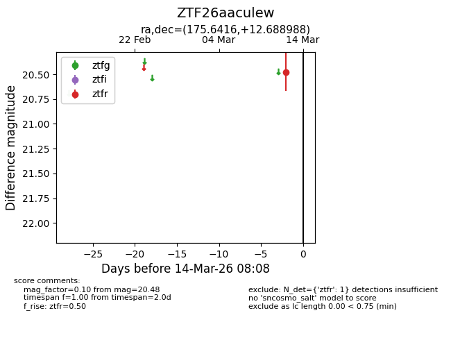
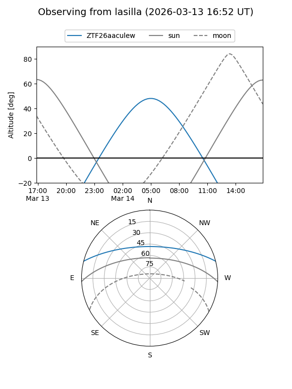
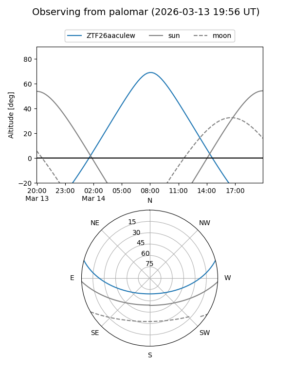

ZTF26aaculew
Target ZTF26aaculew at 2026-03-14 08:09
Aliases and brokers:
FINK: link
Lasair: link
ALeRCE: link
alt names
ZTF26aaculew (ztf,fink_ztf)
Coordinates:
equatorial (ra, dec) = 175.6416,+12.68899
equatorial (HMS+DMS) = 11:42:33.98,+12:41:20.36
galactic (l, b) = (251.3972,+68.35742)
Flags:
Photometry:
last ztfr=20.48
1 ztfr detections
Lightcurve

Visibility


Additional plots